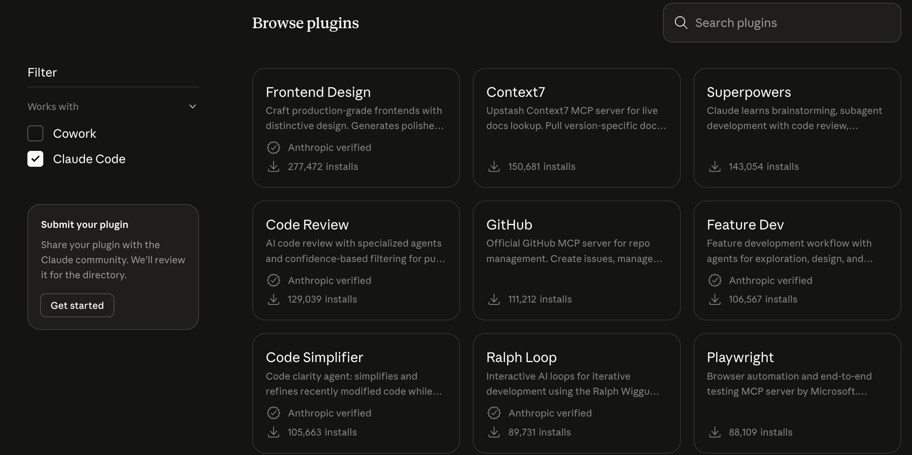
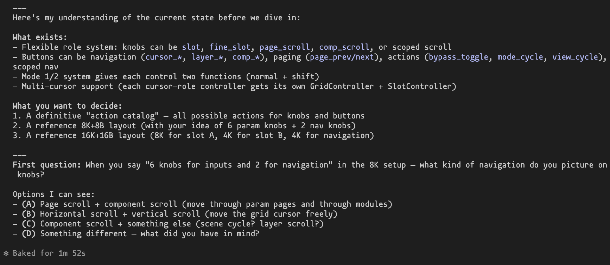
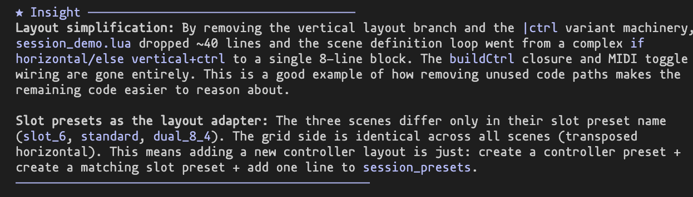

I use Claude Code a lot for coding and research tasks. One of its strengths is that you can extend it with Skills and MCPs (Model Context Protocol servers).
Skills are modular instructions that Claude loads on-demand when relevant. MCPs are small servers/programs that give Claude access to external tools and data. Both are installed via the CLI.
I recommend scrolling through the curated list at claude.com/plugins to find what is useful for you.

Below are my personal recommendations.
This is a skill pack that adds structured workflows for brainstorming, debugging, TDD, and code review. It sounds fancy but the practical effect is simple: Claude follows more disciplined processes instead of jumping straight into coding.
I find it especially useful for brainstorming before implementing a feature, and for the debugging workflow which forces Claude to actually investigate before proposing fixes.
claude install-skill https://claude.com/plugins/superpowers
Some of the /commands it adds:
/brainstorm -- explore requirements and design before writing code/debug -- systematic root cause analysis instead of guessing/tdd -- test-driven development workflow/review -- code review with confidence-based filtering/simplify -- review changed code for reuse and qualityHere is an example of the brainstorming workflow:

An MCP that pulls up-to-date library documentation directly into context. Instead of Claude hallucinating APIs from its training data, it fetches the current docs.
Very useful when working with libraries that update frequently.
claude mcp add context7 -- npx -y @upstash/context7-mcp@latest
A lightweight skill that makes Claude add brief educational insights about your codebase as it works. It highlights implementation patterns and design choices specific to your project.
Good for learning a new codebase or when onboarding collaborators.
claude install-skill https://claude.com/plugins/explanatory-output-style
Here is an example of the output style in a rather technical project of mine:

Browse the curated directory at claude.com/plugins for more skills and MCPs. A few other popular ones worth checking out: Frontend Design, Feature Dev, and the GitHub MCP.
For background on how skills work (the three-level loading mechanism is quite elegant), see the official docs.